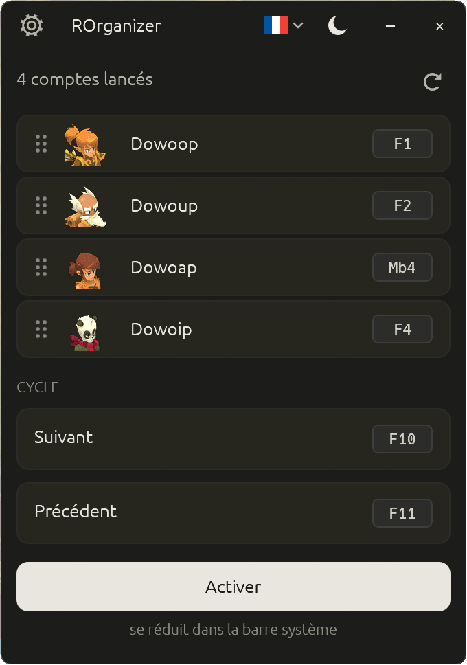

Bascule entre tes comptes Dofus d'un seul appui.
Organizer multicompte gratuit et open source, pour Dofus Unity et Dofus Rétro.
Tu joues jusqu'à huit comptes en parallèle ? Attribue une touche à chacun et passe de l'un à l'autre instantanément. Sans interagir avec le jeu, sans connexion réseau, sans usine à gaz.
Gratuit · Windows 10 et 11 · un seul fichier, aucun installeur
Une touche, un compte :

Pourquoi celui-là
Un outil qui écoute ton clavier mérite d'être lisible.
Inspiré de nAiO Organizer, que la communauté Dofus connaît bien — mais entièrement open source. Pour un programme qui surveille tes raccourcis et tes fenêtres, ça change tout.
- Le code est public
- N'importe qui peut le lire et vérifier qu'il n'y a aucun enregistreur de frappe, aucune télémétrie, aucune connexion cachée.
- Le fichier téléchargé est vérifiable
- Chaque version est compilée par GitHub depuis le code public, jamais sur une machine personnelle. Elle est accompagnée d'une preuve d'origine que tu peux contrôler en une commande — et que personne d'autre ne peut fabriquer.
- Il ne meurt pas avec moi
- Si j'arrête le projet, n'importe qui peut le reprendre. Ton outil ne dépend pas d'une seule personne.
Il ne lit pas le jeu, ne le modifie pas, ne lui envoie rien. ROrganizer se contente d'écouter tes raccourcis et de mettre la bonne fenêtre devant — exactement ce que fait Alt+Tab dans Windows.
Vie privée
Hors-ligne, et ça se vérifie.
- L'application ne se connecte à aucun serveur, jamais.
- Elle ne touche pas à Dofus. Elle ne le lit pas, ne le modifie pas, ne lui envoie rien. Elle écoute tes raccourcis et met la bonne fenêtre devant.
- Aucune frappe n'est enregistrée. Les raccourcis sont reconnus à la volée puis oubliés.
- Le seul fichier écrit sur ton disque est sa propre configuration : tes raccourcis, ta langue, ton thème.
Ce que ça fait
Six choses, bien faites.
- Détection automatiqueTes comptes apparaissent dès qu'ils sont lancés, sur Dofus, Dofus Rétro et Dofus Expérimental.
- Un raccourci par compteUne touche du clavier ou un bouton de souris. F3 Mb4
- Cycle entre les comptesUn raccourci suivant, un précédent, et tu fais le tour de ta team.
- Glisser-déposerRange tes comptes dans l'ordre qui te convient.
- Thème clair ou sombreEn français, anglais ou espagnol.
- Discret dans la barre systèmeActivable et désactivable d'un clic, sans quitter l'application.
Poids réel
Assez léger pour l'oublier.
Mesuré au repos, application active, pendant que tu joues.
- ~8
- Mol'exécutable
- ~75
- Mode RAM utilisée
- 0 %
- de CPUquand tu joues
- <¼s
- détectiond'un nouveau compte
Démarrage
Trois étapes, pas d'installation.
- Télécharge
Récupère le fichier depuis la page des versions. Aucun installeur, aucune dépendance.
- Lance
Double-clique. ROrganizer détecte tout seul les comptes déjà ouverts.
- Configure
Clique sur « définir » à côté d'un compte, puis presse la touche que tu veux lui donner.
Vérifier
Deux commandes pour être sûr de ce que tu lances.
GitHub affiche l'empreinte de chaque fichier publié à côté de son nom. Compare-la à la tienne :
> Get-FileHash .\ROrganizer-<version>-x86_64-windows.exe -Algorithm SHA256
Et depuis la version 1.3.0, chaque fichier porte une preuve d'origine signée par GitHub, qui le relie au code public et au tag publié :
> gh attestation verify .\ROrganizer-<version>-x86_64-windows.exe --repo Loulouw/ROrganizer
La procédure complète est détaillée dans la politique de sécurité du projet.
Questions
Ce qu'on me demande le plus souvent.
Faut-il configurer chaque compte un par un ?
Non. ROrganizer détecte automatiquement tous tes comptes dès qu'ils sont lancés, sur le client classique comme sur Dofus Rétro et Dofus Expérimental. Tu n'as qu'à attribuer un raccourci à chacun, et c'est mémorisé. Les comptes Rétro s'affichent sans icône de classe : leur fenêtre ne l'indique pas.
Est-ce que je risque de me faire bannir ?
ROrganizer n'interagit pas avec Dofus. Il ne lit pas le jeu, ne le modifie pas, ne lui envoie aucune commande. Il fait passer une fenêtre devant — exactement ce que fait Alt+Tab dans Windows. Cela dit, l'usage d'outils tiers reste à tes risques au regard des conditions générales d'Ankama.
Mes raccourcis marchent-ils pendant que je suis en jeu ?
Oui. Ils sont écoutés au niveau global de Windows, donc ils fonctionnent quelle que soit la fenêtre au premier plan. Une nuance : si Dofus tourne en administrateur, lance ROrganizer en administrateur aussi.
Windows affiche un avertissement bleu au premier lancement, c'est normal ?
Oui. ROrganizer n'est pas signé avec un certificat de code, qui coûte plusieurs centaines d'euros par an et n'est pas justifiable pour un projet gratuit. Windows SmartScreen alerte par précaution sur tout programme peu répandu. Clique sur « Informations complémentaires » puis « Exécuter quand même ».
Mon antivirus détecte un « trojan », l'application est-elle dangereuse ?
Non, c'est un faux positif. Pour déclencher tes raccourcis même quand Dofus est au premier plan, ROrganizer doit écouter le clavier et la souris au niveau global de Windows, puis faire passer une fenêtre devant. Un antivirus qui juge un programme sur sa forme, sans lire son code, ne peut pas distinguer ce mécanisme de celui d'un logiciel espion. Le nom affiché — souvent Wacatac — est une étiquette générique attribuée automatiquement, pas l'identification d'un virus connu.
Ce que tu peux vérifier toi-même : le code est public, aucune frappe n'est enregistrée, et l'application ne se connecte à aucun serveur — constatable dans le Moniteur de ressources de Windows. Chaque faux positif est signalé à Microsoft à la publication d'une version, mais la correction met quelques jours à se propager. En attendant, tu peux ajouter le fichier en exclusion dans ton antivirus, après avoir vérifié son empreinte.
Comment je désinstalle l'application ?
Supprime le fichier. Tes préférences sont dans %APPDATA%\rorganizer\ — supprime ce dossier pour un nettoyage complet. Aucune clé de registre modifiée, aucun service installé.
Attention aux contrefaçons
ROrganizer se télécharge uniquement depuis la page des versions du dépôt GitHub, sous la forme d'un seul fichier exécutable.
Il n'est jamais distribué :
- dans une archive
.zip,.rarou.7z— encore moins protégée par mot de passe ; - sous forme de script
.bat,.cmd,.ps1ou.vbs; - via un installeur ou un
setup.exe; - depuis un hébergeur de fichiers, un lien Discord, un forum ou un site miroir.
Un mot de passe d'archive communiqué à part — dans une vidéo, un commentaire, un message privé — sert à empêcher l'analyse antivirus automatique de l'hébergeur. C'est un signal d'alerte à lui seul.
Tout fichier portant le nom ROrganizer et ne correspondant pas à cette description ne vient pas de moi, quelle que soit la source qui le propose.